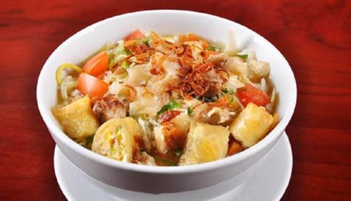

Kalo beli mah dikit tapi enak. Mending masak sendiri banyak juga ga kalah enak nya lho bun sama pedagang jajanan di luar sana hehe
Bahan Bahan
- 500 gr kikil
- 500 gr daging sapi bagian sengkel
- 2 bks bihunku (bumbuny jgn di pake)
- 2 pcs mie kuning gleser basah
- 100 gr kol (iris tipis)
Pelengkap :
- 4 lmbar daun sledri (iris tipis)
- 2 buah tomat (potong sesuai selera)
- 3 wortel (dipotong kotak2 kecil)
- 5 lembar daun bawang iris tipis
- 4 buah jeruk limau
- Bawang goreng jadi (beli di pasar)
- 5/8 ⅝5 goreng risol (beli jd d pdgang) ini optional
Bumbu soto :
- 6 siung bawang merah
- 5 siung bawang putih
- 4 biji kemiri (jgn lupa di sangrai)
- 2 lmbr daun salam
- 2 lmbr daun jeruk (buat yg ga ska daun jeruk boleh ga pke)
- secukupnya Minyak untuk menumis
- 3 sdm kecap manis
- 8 Cabai rawit
- Garam, micin sedikit saja,lada, royco ayam
Air untuk merebus kikil dan sengkel sapi
Langkah Langkah
Rebus daging sapi bagian sengkel ±10 menit. Tiriskan buang air y. Rebus kembali dlm presto/rice cooker ± 1 jam. Sisihkan daging nya di potong dadu kecil dan air rebusan nya disimpan.
Rebus kikil ±10 menit. Tiriskan dan potong sesuai selera
Ulek bawang merah,bawang putih,kemiri yg tlah d sangrai. Tumis bumbu halus tsb bersama daun salam,daun jeruk sampai sampi kuning (api kecil ya bun masaknya)
Tambahkan air rebusan sengkel. Masukan potongan wortel, garam, micin, lada, royco,kecap secukupnya. Cek rasa. Masak selama ± ⅝5 menit.
Rebus semua bihunku. Tiriskan dan sisihkan. Rebus semua kol jangan lupa di tiriskan dan di sisihkan yah.
Cuci beraih mi basah kuning gleser nya. Tiriskan dan sisihkan.
Masukan mie,bihun,kol,tomat,kikil,sengkel sapi ke dalam 4 mangkuk. Lalu tambahkan air soto yang telah jadi di atas mangkuk tersebut. Tambahkan irisan daun seledri,bawang goreng dan sambal ulekan tadi. (Aku ga pake seledri soalnya ga suka hehe)
Risol nya di gunting2 sesuai selera dan jadikan toping di atas semua mangkuk dan tambahkan perasan jeruk limau di atas nya lagi (saya ga suka risol maka nya saya ga pake). Selamat mencoba